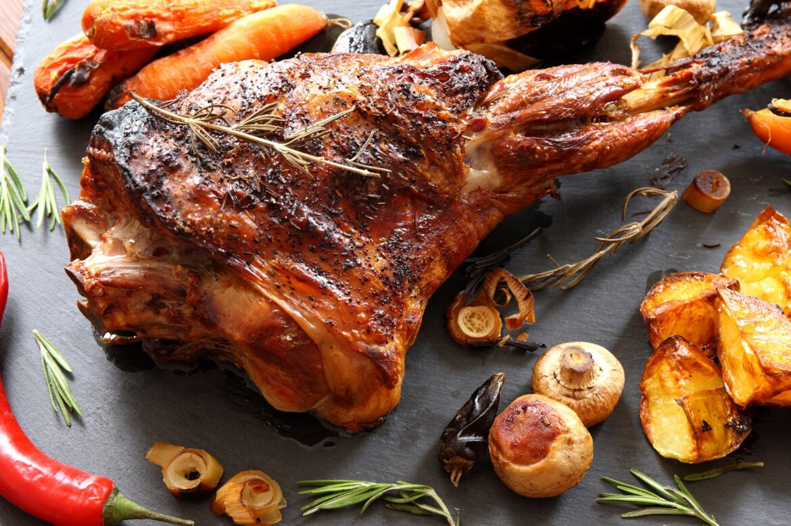

Cordero asado is a popular Castillan dish made by roasting a whole lamb over an open fire. The lamb is usually marinated with lemon, garlic, and various fresh herbs such as rosemary and thyme. Once it is properly cooked, cordero asado is typically accompanied by roasted potatoes and onions on the side.
Meal prep time : 2 hour 10 minutes
Servings : 8-10